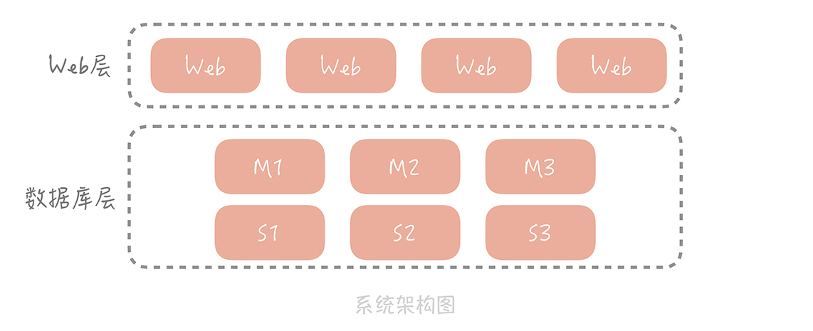
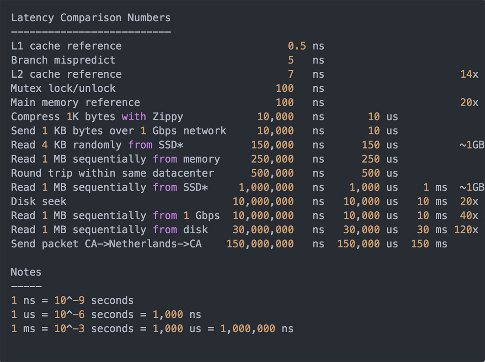
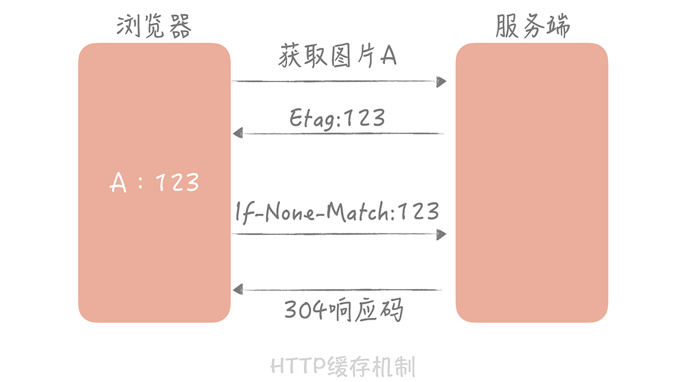
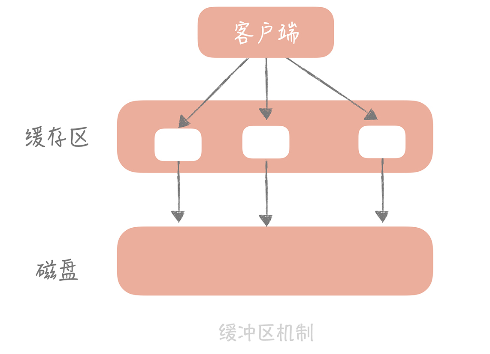

- 00 开篇词 为什么你要学习高并发系统设计？.md.html
- 01 高并发系统：它的通用设计方法是什么？.md.html
- 02 架构分层：我们为什么一定要这么做？.md.html
- 03 系统设计目标（一）：如何提升系统性能？.md.html
- 04 系统设计目标（二）：系统怎样做到高可用？.md.html
- 05 系统设计目标（三）：如何让系统易于扩展？.md.html
- 06 面试现场第一期：当问到组件实现原理时，面试官是在刁难你吗？.md.html
- 07 池化技术：如何减少频繁创建数据库连接的性能损耗？.md.html
- 08 数据库优化方案（一）：查询请求增加时，如何做主从分离？.md.html
- 09 数据库优化方案（二）：写入数据量增加时，如何实现分库分表？.md.html
- 10 发号器：如何保证分库分表后ID的全局唯一性？.md.html
- 11 NoSQL：在高并发场景下，数据库和NoSQL如何做到互补？.md.html
- 12 缓存：数据库成为瓶颈后，动态数据的查询要如何加速？.md.html
- 13 缓存的使用姿势（一）：如何选择缓存的读写策略？.md.html
- 14 缓存的使用姿势（二）：缓存如何做到高可用？.md.html
- 15 缓存的使用姿势（三）：缓存穿透了怎么办？.md.html
- 16 CDN：静态资源如何加速？.md.html
- 17 消息队列：秒杀时如何处理每秒上万次的下单请求？.md.html
- 18 消息投递：如何保证消息仅仅被消费一次？.md.html
- 19 消息队列：如何降低消息队列系统中消息的延迟？.md.html
- 20 面试现场第二期：当问到项目经历时，面试官究竟想要了解什么？.md.html
- 21 系统架构：每秒1万次请求的系统要做服务化拆分吗？.md.html
- 22 微服务架构：微服务化后，系统架构要如何改造？.md.html
- 23 RPC框架：10万QPS下如何实现毫秒级的服务调用？.md.html
- 24 注册中心：分布式系统如何寻址？.md.html
- 25 分布式Trace：横跨几十个分布式组件的慢请求要如何排查？.md.html
- 26 负载均衡：怎样提升系统的横向扩展能力？.md.html
- 27 API网关：系统的门面要如何做呢？.md.html
- 28 多机房部署：跨地域的分布式系统如何做？.md.html
- 29 Service Mesh：如何屏蔽服务化系统的服务治理细节？.md.html
- 30 给系统加上眼睛：服务端监控要怎么做？.md.html
- 31 应用性能管理：用户的使用体验应该如何监控？.md.html
- 32 压力测试：怎样设计全链路压力测试平台？.md.html
- 33 配置管理：成千上万的配置项要如何管理？.md.html
- 34 降级熔断：如何屏蔽非核心系统故障的影响？.md.html
- 35 流量控制：高并发系统中我们如何操纵流量？.md.html
- 36 面试现场第三期：你要如何准备一场技术面试呢？.md.html
- 37 计数系统设计（一）：面对海量数据的计数器要如何做？.md.html
- 38 计数系统设计（二）：50万QPS下如何设计未读数系统？.md.html
- 39 信息流设计（一）：通用信息流系统的推模式要如何做？.md.html
- 40 信息流设计（二）：通用信息流系统的拉模式要如何做？.md.html
- 加餐 数据的迁移应该如何做？.md.html
- 期中测试 10道高并发系统设计题目自测.md.html
- 用户故事 从“心”出发，我还有无数个可能.md.html
- 结束语 学不可以已.md.html
12 缓存：数据库成为瓶颈后，动态数据的查询要如何加速？
你好，我是唐扬。
通过前面数据库篇的学习，你已经了解了在高并发大流量下，数据库层的演进过程以及库表设计上的考虑点。你的垂直电商系统在完成了对数据库的主从分离和分库分表之后，已经可以支撑十几万 DAU 了，整体系统的架构也变成了下面这样：

从整体上看，数据库分了主库和从库，数据也被切分到多个数据库节点上。但随着并发的增加，存储数据量的增多，数据库的磁盘 IO 逐渐成了系统的瓶颈，我们需要一种访问更快的组件来降低请求响应时间，提升整体系统性能。这时我们就会使用缓存。那么什么是缓存，我们又该如何将它的优势最大化呢？
**本节课是缓存篇的总纲，**我将从缓存定义、缓存分类和缓存优势劣势三个方面全方位带你掌握缓存的设计思想和理念，再用剩下 4 节课的时间，带你针对性地掌握使用缓存的正确姿势，以便让你在实际工作中能够更好地使用缓存提升整体系统的性能。
接下来，让我们进入今天的课程吧！
什么是缓存
缓存，是一种存储数据的组件，它的作用是让对数据的请求更快地返回。
我们经常会把缓存放在内存中来存储， 所以有人就把内存和缓存画上了等号，这完全是外行人的见解。作为业内人士，你要知道在某些场景下我们可能还会使用 SSD 作为冷数据的缓存。比如说 360 开源的 Pika 就是使用 SSD 存储数据解决 Redis 的容量瓶颈的。
实际上，凡是位于速度相差较大的两种硬件之间，用于协调两者数据传输速度差异的结构，均可称之为缓存。那么说到这儿我们就需要知道常见硬件组件的延时情况是什么样的了，这样在做方案的时候可以对延迟有更直观的印象。幸运的是，业内已经有人帮我们总结出这些数据了，我将这些数据整理了一下，你可以看一下。

从这些数据中，你可以看到，做一次内存寻址大概需要 100ns，而做一次磁盘的查找则需要 10ms。如果我们将做一次内存寻址的时间类比为一个课间，那么做一次磁盘查找相当于度过了大学的一个学期。可见，我们使用内存作为缓存的存储介质相比于以磁盘作为主要存储介质的数据库来说，性能上会提高多个数量级，同时也能够支撑更高的并发量。所以，内存是最常见的一种缓存数据的介质。
缓存作为一种常见的空间换时间的性能优化手段，在很多地方都有应用，我们先来看几个例子，相信你一定不会陌生。
1. 缓存案例
Linux 内存管理是通过一个叫做 MMU（Memory Management Unit）的硬件，来实现从虚拟地址到物理地址的转换的，但是如果每次转换都要做这么复杂计算的话，无疑会造成性能的损耗，所以我们会借助一个叫做 TLB（Translation Lookaside Buffer）的组件来缓存最近转换过的虚拟地址，和物理地址的映射。TLB 就是一种缓存组件，缓存复杂运算的结果，就好比你做一碗色香味俱全的面条可能比较复杂，那么我们把做好的面条油炸处理一下做成方便面，你做方便面的话就简单多了，也快速多了。这个缓存组件比较底层，这里你只需要了解一下就可以了。
在大部分的笔记本，桌面电脑和服务器上都会有一个或者多个 TLB 组件，在不经意间帮助我们加快地址转换的速度。
**再想一下你平时经常刷的抖音。**平台上的短视频实际上是使用内置的网络播放器来完成的。网络播放器接收的是数据流，将数据下载下来之后经过分离音视频流，解码等流程后输出到外设设备上播放。
如果我们在打开一个视频的时候才开始下载数据的话，无疑会增加视频的打开速度（我们叫首播时间），并且播放过程中会有卡顿。所以我们的播放器中通常会设计一些缓存的组件，在未打开视频时缓存一部分视频数据，比如我们打开抖音，服务端可能一次会返回三个视频信息，我们在播放第一个视频的时候，播放器已经帮我们缓存了第二、三个视频的部分数据，这样在看第二个视频的时候就可以给用户“秒开”的感觉。
**除此之外，我们熟知的 HTTP 协议也是有缓存机制的。**当我们第一次请求静态的资源时，比如一张图片，服务端除了返回图片信息，在响应头里面还有一个“Etag”的字段。浏览器会缓存图片信息以及这个字段的值。当下一次再请求这个图片的时候，浏览器发起的请求头里面会有一个“If-None-Match”的字段，并且把缓存的“Etag”的值写进去发给服务端。服务端比对图片信息是否有变化，如果没有，则返回浏览器一个 304 的状态码，浏览器会继续使用缓存的图片信息。通过这种缓存协商的方式，可以减少网络传输的数据大小，从而提升页面展示的性能。

2. 缓存与缓冲区
讲了这么多缓存案例，想必你对缓存已经有了一个直观并且形象的了解了。除了缓存，我们在日常开发过程中还会经常听见一个相似的名词——缓冲区，那么，什么是缓冲区呢？缓冲和缓存只有一字之差，它们有什么区别呢？
我们知道，缓存可以提高低速设备的访问速度，或者减少复杂耗时的计算带来的性能问题。理论上说，我们可以通过缓存解决所有关于“慢”的问题，比如从磁盘随机读取数据慢，从数据库查询数据慢，只是不同的场景消耗的存储成本不同。
**缓冲区则是一块临时存储数据的区域，这些数据后面会被传输到其他设备上。**缓冲区更像“消息队列篇”中即将提到的消息队列，用以弥补高速设备和低速设备通信时的速度差。比如，我们将数据写入磁盘时并不是直接刷盘，而是写到一块缓冲区里面，内核会标识这个缓冲区为脏。当经过一定时间或者脏缓冲区比例到达一定阈值时，由单独的线程把脏块刷新到硬盘上。这样避免了每次写数据都要刷盘带来的性能问题。

以上就是缓冲区和缓存的区别，从这个区别来看，上面提到的 TLB 的命名是有问题的，它应该是缓存而不是缓冲区。
现在你已经了解了缓存的含义，那么我们经常使用的缓存都有哪些？我们又该如何使用缓存，将它的优势最大化呢？
缓存分类
在我们日常开发中，常见的缓存主要就是静态缓存、分布式缓存和热点本地缓存这三种。
静态缓存在 Web 1.0 时期是非常著名的，它一般通过生成 Velocity 模板或者静态 HTML 文件来实现静态缓存，在 Nginx 上部署静态缓存可以减少对于后台应用服务器的压力。例如，我们在做一些内容管理系统的时候，后台会录入很多的文章，前台在网站上展示文章内容，就像新浪，网易这种门户网站一样。
当然，我们也可以把文章录入到数据库里面，然后前端展示的时候穿透查询数据库来获取数据，但是这样会对数据库造成很大的压力。即使我们使用分布式缓存来挡读请求，但是对于像日均 PV 几十亿的大型门户网站来说，基于成本考虑仍然是不划算的。
所以我们的解决思路是每篇文章在录入的时候渲染成静态页面，放置在所有的前端 Nginx 或者 Squid 等 Web 服务器上，这样用户在访问的时候会优先访问 Web 服务器上的静态页面，在对旧的文章执行一定的清理策略后，依然可以保证 99% 以上的缓存命中率。
这种缓存只能针对静态数据来缓存，对于动态请求就无能为力了。那么我们如何针对动态请求做缓存呢？这时你就需要分布式缓存了。
分布式缓存的大名可谓是如雷贯耳了，我们平时耳熟能详的 Memcached、Redis 就是分布式缓存的典型例子。它们性能强劲，通过一些分布式的方案组成集群可以突破单机的限制。所以在整体架构中，分布式缓存承担着非常重要的角色（接下来的课程我会专门针对分布式缓存，带你了解分布式缓存的使用技巧以及高可用的方案，让你能在工作中对分布式缓存运用自如）。
对于静态的资源的缓存你可以选择静态缓存，对于动态的请求你可以选择分布式缓存，那么什么时候要考虑热点本地缓存呢？
**答案是当我们遇到极端的热点数据查询的时候。**热点本地缓存主要部署在应用服务器的代码中，用于阻挡热点查询对于分布式缓存节点或者数据库的压力。
比如某一位明星在微博上有了热点话题，“吃瓜群众”会到他 (她) 的微博首页围观，这就会引发这个用户信息的热点查询。这些查询通常会命中某一个缓存节点或者某一个数据库分区，短时间内会形成极高的热点查询。
那么我们会在代码中使用一些本地缓存方案，如 HashMap，Guava Cache 或者是 Ehcache 等，它们和应用程序部署在同一个进程中，优势是不需要跨网络调度，速度极快，所以可以来阻挡短时间内的热点查询。来看个例子。
比方说你的垂直电商系统的首页有一些推荐的商品，这些商品信息是由编辑在后台录入和变更。你分析编辑录入新的商品或者变更某个商品的信息后，在页面的展示是允许有一些延迟的，比如说 30 秒的延迟，并且首页请求量最大，即使使用分布式缓存也很难抗住，所以你决定使用 Guava Cache 来将所有的推荐商品的信息缓存起来，并且设置每隔 30 秒重新从数据库中加载最新的所有商品。
首先，我们初始化 Guava 的 Loading Cache：
CacheBuilder<String, List<Product>> cacheBuilder = CacheBuilder.newBuilder().maximumSize(maxSize).recordStats(); // 设置缓存最大值
cacheBuilder = cacheBuilder.refreshAfterWrite(30, TimeUnit.Seconds); // 设置刷新间隔
LoadingCache<String, List<Product>> cache = cacheBuilder.build(new CacheLoader<String, List<Product>>() {
@Override
public List<Product> load(String k) throws Exception {
return productService.loadAll(); // 获取所有商品
}
});
这样，你在获取所有商品信息的时候可以调用 Loading Cache 的 get 方法，就可以优先从本地缓存中获取商品信息，如果本地缓存不存在，会使用 CacheLoader 中的逻辑从数据库中加载所有的商品。
由于本地缓存是部署在应用服务器中，而我们应用服务器通常会部署多台，当数据更新时，我们不能确定哪台服务器本地中了缓存，更新或者删除所有服务器的缓存不是一个好的选择，所以我们通常会等待缓存过期。因此，这种缓存的有效期很短，通常为分钟或者秒级别，以避免返回前端脏数据。
缓存的不足
通过了解上面的内容，你不难发现，缓存的主要作用是提升访问速度，从而能够抗住更高的并发。那么，缓存是不是能够解决一切问题？显然不是。事物都是具有两面性的，缓存也不例外，我们要了解它的优势的同时也需要了解它有哪些不足，从而扬长避短，将它的作用发挥到最大。
**首先，缓存比较适合于读多写少的业务场景，并且数据最好带有一定的热点属性。**这是因为缓存毕竟会受限于存储介质不可能缓存所有数据，那么当数据有热点属性的时候才能保证一定的缓存命中率。比如说类似微博、朋友圈这种 20% 的内容会占到 80% 的流量。所以，一旦当业务场景读少写多时或者没有明显热点时，比如在搜索的场景下，每个人搜索的词都会不同，没有明显的热点，那么这时缓存的作用就不明显了。
**其次，缓存会给整体系统带来复杂度，并且会有数据不一致的风险。**当更新数据库成功，更新缓存失败的场景下，缓存中就会存在脏数据。对于这种场景，我们可以考虑使用较短的过期时间或者手动清理的方式来解决。
**再次，之前提到缓存通常使用内存作为存储介质，但是内存并不是无限的。**因此，我们在使用缓存的时候要做数据存储量级的评估，对于可预见的需要消耗极大存储成本的数据，要慎用缓存方案。同时，缓存一定要设置过期时间，这样可以保证缓存中的会是热点数据。
**最后，缓存会给运维也带来一定的成本，**运维需要对缓存组件有一定的了解，在排查问题的时候也多了一个组件需要考虑在内。
虽然有这么多的不足，但是缓存对于性能的提升是毋庸置疑的，我们在做架构设计的时候也需要把它考虑在内，只是在做具体方案的时候需要对缓存的设计有更细致的思考，才能最大化的发挥缓存的优势。
课程小结
这节课我带你了解了缓存的定义，常见缓存的分类以及缓存的不足。我想跟你强调的重点有以下几点：
- 缓存可以有多层，比如上面提到的静态缓存处在负载均衡层，分布式缓存处在应用层和数据库层之间，本地缓存处在应用层。我们需要将请求尽量挡在上层，因为越往下层，对于并发的承受能力越差；
- 缓存命中率是我们对于缓存最重要的一个监控项，越是热点的数据，缓存的命中率就越高。
你还需要理解的是，缓存不仅仅是一种组件的名字，更是一种设计思想，你可以认为任何能够加速读请求的组件和设计方案都是缓存思想的体现。而这种加速通常是通过两种方式来实现：
- 使用更快的介质，比方说课程中提到的内存；
- 缓存复杂运算的结果，比方说前面 TLB 的例子就是缓存地址转换的结果。
那么，当你在实际工作中碰到“慢”的问题时，缓存就是你第一时间需要考虑的。